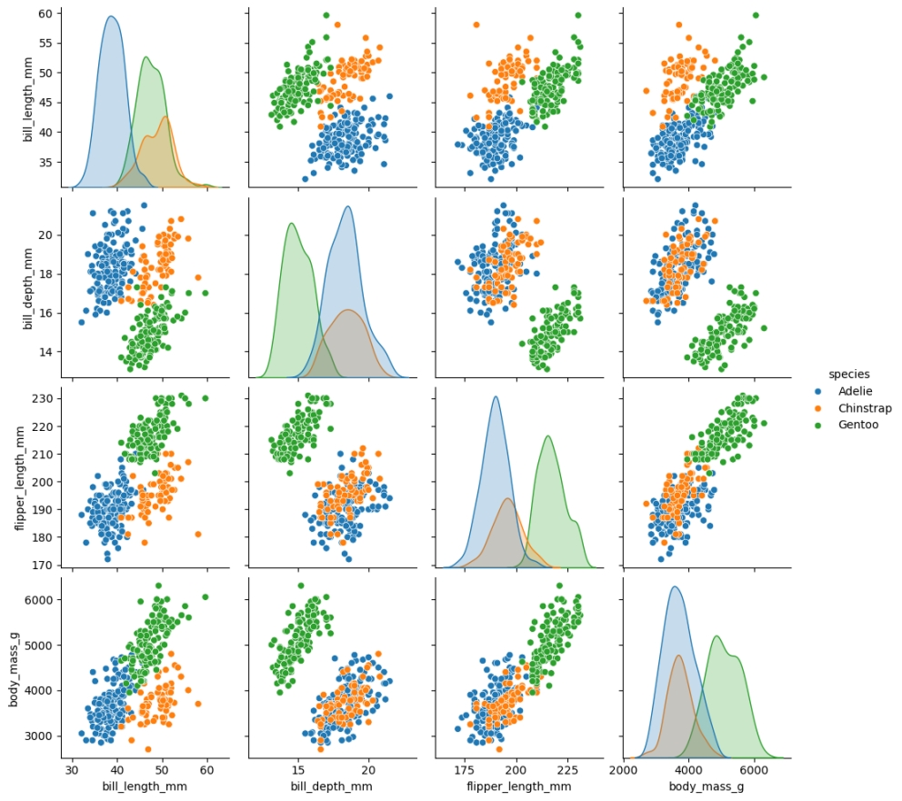
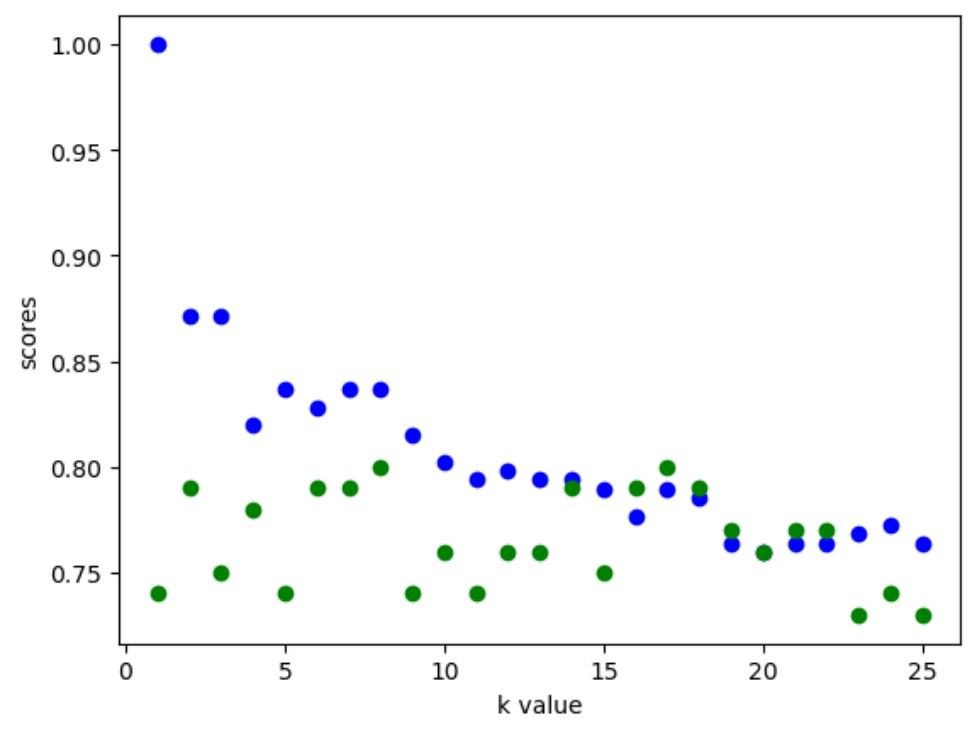

As with any data project we need a dataset to work with. For this example we can use the Palmer Penguins dataset, which is used by many people as an introductory dataset.
Often in working with a dataset there may be missing pieces of information. Often there is reason to try and fill in these missing values, but when the data is missing there are a number of ways to acomplish this. The one we will explore here is using a machine learning model to make an educated guess on the missing values.
Before we get in to filling in missing values we need to understand our dataset. One simple way to do this is with a pair plot. This can help us get a simple overview of how our different numerical varaibles may be related. Seaborn makes it quite simple to do this. 
After more exploring there are roughly two dozen penguins with a missing sex value. Since sex is a binary that tends to impact a lot of features, one classification model we can consider is a K-Nearest Neighbors classifier. In simple words, this takes our penguins who are missing an entry and assigns them based on a number of penguins who have similar characteristics and uses their sex to determine what the missing sex likley is.
Scikit learn allows us to create a model like this quite easily. The steps are to create the model, split the data into training and test sets, and then train and evaluate the model using that data.
K = []
training = []
test = []
scores = {}
X_train, X_test, y_train, y_test = train_test_split(X, y, test_size=0.3,random_state=0)
for k in range(1,26):
knm = KNeighborsClassifier(n_neighbors = k)
knm.fit(X_train, y_train)
training_score = knm.score(X_train, y_train)
test_score = knm.score(X_test, y_test)
K.append(k)
training.append(training_score)
test.append(test_score)
scores[k] = [training_score, test_score]
With a K-Nearest Neighbor model the most important decision is the choice of k value. Using our training (blue) and test (green) datasets, we can compare how different k values perform. Those test scores are mapped out below.
We can see a pretty typical loss curve for the training data, however the scores on the test data seem very random. Likley this means the model is overfitting on the training data. In a critical situation this would likley be reason to switch approaches. Since this is an exercise in using scikit tools we press on.
Typically when choosing parameters a good rule of thumb is to choose the "elbow point" of the loss curve, which here is a k value of 2.
Training and using the final model it seems that all but two of the penguins were female, giving us a more educated guess on filling in missing values.
To view the full code visit my github repo.